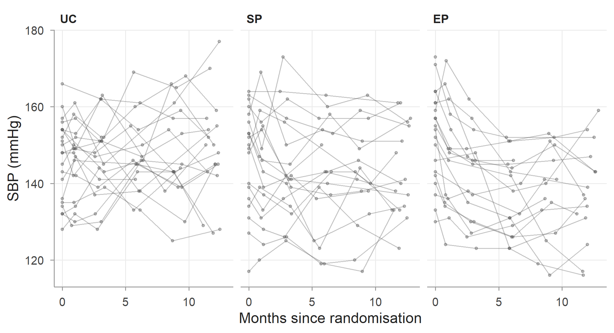
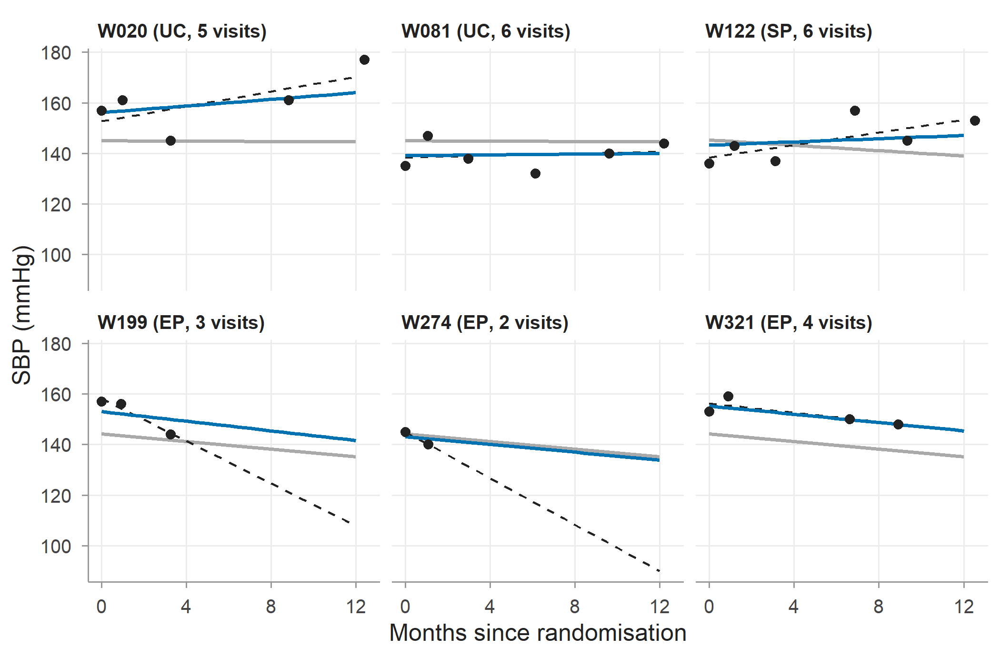
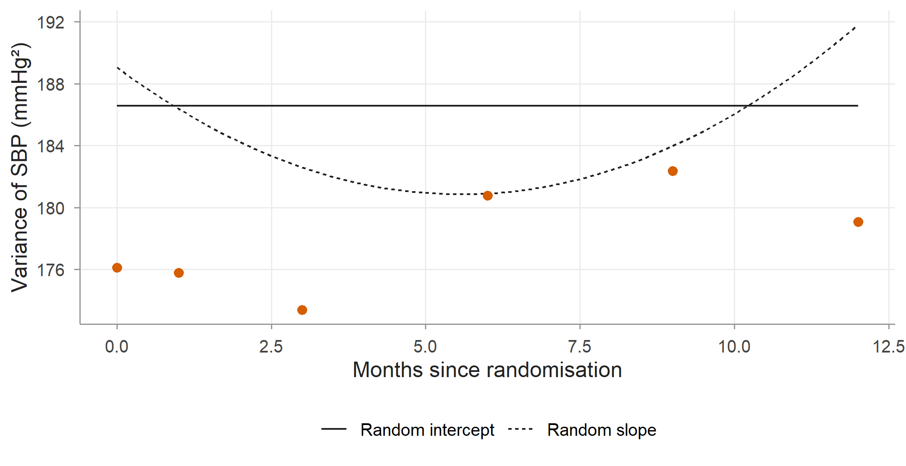
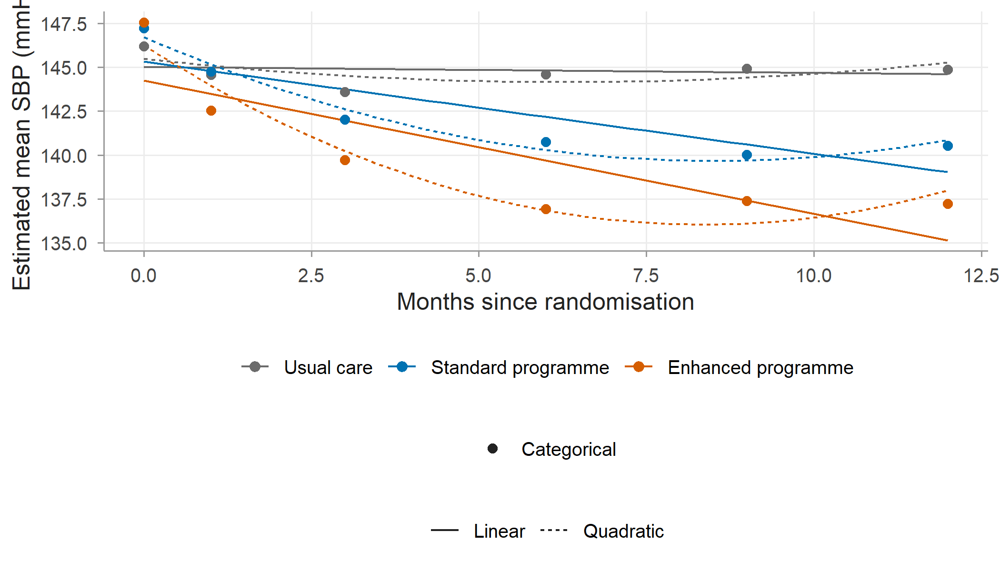
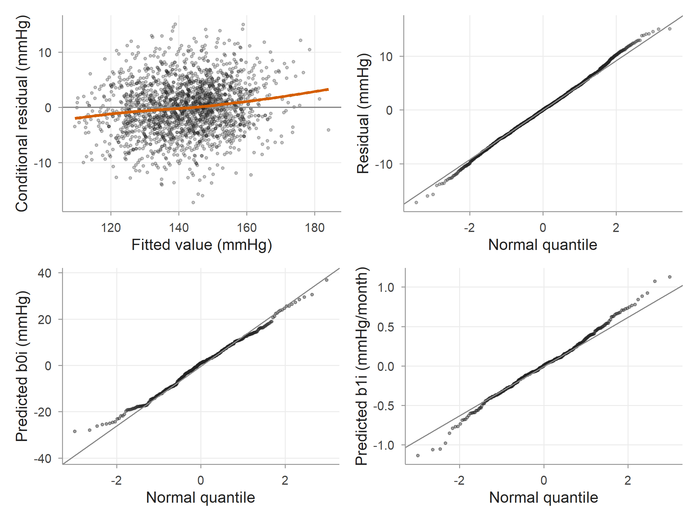
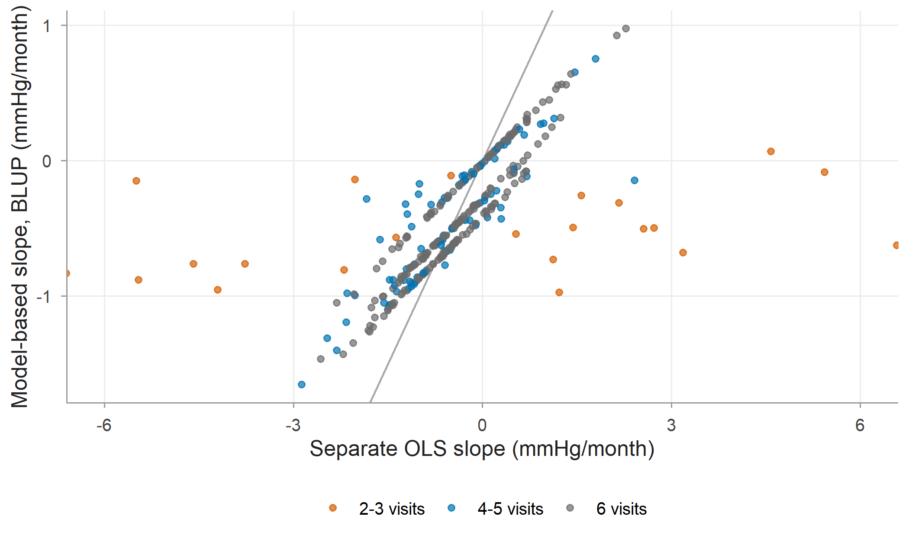

source(here::here("R", "setup.R"))
walk <- load_walk()4 Linear mixed-effects models
Module 3 ended with a list of things the traditional methods cannot do: use every participant whatever visits they missed, handle visits that happen at slightly different times for different people, describe how individuals differ in their rate of change, and give honest standard errors for the comparison of change between groups. The linear mixed-effects model does all of these with one coherent model. Its central idea is simple. Every participant has a trajectory of their own, the trajectories vary around an average trajectory in a way that can be described by a few variance parameters, and measurements scatter around each participant’s trajectory. The average trajectory carries the treatment comparison; the variation between and within participants determines how much the data tell us about it. This module builds the model in two steps (random intercepts, then random slopes), shows how the coding of time changes what each coefficient means, fits the course’s reference models to the WALK trial, and explains estimation by REML, predicted random effects and shrinkage. Linear mixed models are the core of most of the rest of the course, so the interpretation habits formed here matter.
Learning outcomes
By the end of this module participants will be able to:
- 4.1 Write the equation of a random-intercept and a random-slope model and explain every term, including the distributions of the random effects and residuals.
- 4.2 Distinguish fixed effects, random effects and residual variation, and interpret variance components and the intraclass correlation.
- 4.3 Specify time as continuous, categorical, centred or nonlinear, and explain how each choice changes what the intercept and the group effects mean.
- 4.4 Fit and interpret a group-by-time interaction model with
lme4/lmerTestandnlme, and report the difference in mean change with a confidence interval. - 4.5 Explain the difference between ML and REML estimation and when each is appropriate.
- 4.6 Obtain and interpret predicted random effects (BLUPs) and shrinkage.
Prerequisites
Module 0 (linear regression, interactions, residual plots), Module 1 (within- and between-subject variation, estimands), Module 2 (long format, spaghetti plots) and Module 3 (regression with an arm-by-time interaction, the limits of repeated-measures ANOVA, change scores and ANCOVA).
WarningSimulated data
All examples use simulated data from fictional studies. Results illustrate methods; they are not empirical findings.
The WALK data and the question
WALK is a fictional randomised trial of a community walking programme in 360 adults with raised blood pressure, randomised to usual care (UC), a standard programme (SP) or an enhanced programme (EP). Systolic blood pressure (SBP, mmHg) was scheduled to be measured at months 0, 1, 3, 6, 9 and 12. Actual visit times (month) scatter around the schedule (month_sched), some visits were missed and some participants dropped out, so the long dataset has 1897 observations rather than 2160. The primary research question is whether each programme lowers SBP over 12 months compared with usual care, and the primary estimand is the difference in mean change from baseline to month 12 between each programme and usual care.
plot_spaghetti(walk, month, sbp, id, group = arm, n_show = 60) +
labs(x = "Months since randomisation", y = "SBP (mmHg)")
Figure 4.1 shows the three features a model for these data must handle. Participants start at very different levels (from about 110 to 190 mmHg), and these differences persist: a participant who starts high tends to stay high. Each participant’s line wobbles from visit to visit. And some lines are short because the participant stopped attending. Module 3 showed that ordinary regression ignores the first feature and that repeated-measures ANOVA cannot cope with the third.
4.1 Part 1. Building the model
4.1.1 Fixed effects, random effects and residual variation
A linear mixed-effects model (LMM; also called a multilevel or hierarchical linear model) splits the variation in the outcome into three parts.
Fixed effects describe the average trajectory in the population and how it depends on covariates such as arm. They are the regression coefficients \(\boldsymbol\beta\) that you already know from Module 0, and they usually carry the research question. In WALK the fixed effects describe mean SBP over time in each arm.
Random effects describe how each participant’s own trajectory departs from the average one. A random intercept \(b_{0i}\) says that participant \(i\) sits \(b_{0i}\) mmHg above or below the average line throughout follow-up; a random slope \(b_{1i}\) says that participant \(i\) changes \(b_{1i}\) mmHg per month faster or slower than average. We do not estimate a separate fixed parameter for each participant. Instead we treat the participants as a sample from a population and estimate the variance of the random effects, for example \(\tau_0^2\), the variance of the intercepts. This is what makes the effects “random”: they are draws from a distribution whose spread is a parameter of the model.
Residual error \(\varepsilon_{ij}\) is what is left: the deviation of an individual measurement from the participant’s own line, caused by measurement error and by short-term fluctuation in blood pressure. Its variance is \(\sigma^2\).
The variances \(\tau_0^2\), \(\tau_1^2\) (and the covariance \(\tau_{01}\)) and \(\sigma^2\) are called variance components. They are the second set of parameters in the model, alongside the fixed effects.
m_demo <- lmer(sbp ~ month * arm + (1 + month | id), data = walk,
control = lmer_ctrl)
set.seed(4)
nobs <- count(walk, id)
pick <- c(sample(nobs$id[nobs$n == 6], 2), sample(nobs$id[nobs$n %in% 4:5], 2),
sample(nobs$id[nobs$n %in% 2:3], 2))
d6 <- walk |> filter(id %in% pick) |>
mutate(panel = paste0(id, " (", arm, ", ", ave(sbp, id, FUN = length), " visits)"))
grid6 <- d6 |> distinct(id, arm, panel) |>
tidyr::crossing(month = seq(0, 12, 0.5))
grid6$blup <- predict(m_demo, newdata = grid6)
grid6$mean <- predict(m_demo, newdata = grid6, re.form = NA)
ols6 <- d6 |> group_by(id) |>
summarise(a = coef(lm(sbp ~ month))[1], b = coef(lm(sbp ~ month))[2])
grid6 <- grid6 |> left_join(ols6, by = "id") |> mutate(ols = a + b * month)
ggplot(d6, aes(month, sbp)) +
geom_line(data = grid6, aes(y = mean), colour = "#AAAAAA", linewidth = 0.8) +
geom_line(data = grid6, aes(y = ols), linetype = "dashed") +
geom_line(data = grid6, aes(y = blup), colour = course_colours["blue"],
linewidth = 0.8) +
geom_point(size = 1.8) +
facet_wrap(~ panel, ncol = 3) +
labs(x = "Months since randomisation", y = "SBP (mmHg)")
Figure 4.2 illustrates the intuition. For each participant we could draw a least-squares line through their own points (dashed). With six visits that line is a reasonable summary; with two or three visits it is mostly noise, and with a single visit it cannot be drawn at all. The mixed model’s prediction for the participant (solid blue) is a compromise between the participant’s own line and the average line for their arm (grey). The compromise leans toward the participant’s own data when there are many precise observations and toward the average when there are few. This pulling toward the mean is called shrinkage, and Section 4.3.2 treats it formally. It is the reason mixed models handle unbalanced data so gracefully: every participant contributes what their data can support, and nobody is discarded.
The same model has two readings. Read subject-specific (conditional), it describes the trajectory of a participant with given random effects. Read population-average (marginal), it describes the mean trajectory averaged over participants. For a linear mixed model the two readings give the same fixed-effect coefficients, because averaging \(\mathbf{x}_{ij}^\top\boldsymbol\beta + b_{0i} + b_{1i}t_{ij}\) over random effects with mean zero returns \(\mathbf{x}_{ij}^\top\boldsymbol\beta\). This is not true for the nonlinear links of Module 8, so it is worth remembering that the convenience is special to the linear case.
NoteWhy this matters
The random effects do two jobs. Scientifically, their variances describe how much participants differ in level and in rate of change. Statistically, they induce correlation between the repeated measurements of the same participant, which is what makes the standard errors of the fixed effects correct. Even when the individual differences are of no interest, the random effects are needed for valid inference about the mean.
4.1.2 The random-intercept model
The research question and estimand
We start with the simplest mixed model to see each part clearly. The question is the one from Module 3’s regression review: does mean SBP change at a different rate in each programme compared with usual care? If change is approximately linear over the year, the estimand is the difference in mean slope (mmHg per month) between SP and UC and between EP and UC.
Data structure and outcome types
The outcome is continuous (SBP in mmHg) and the data are in long format, one row per observation, with 1897 rows from 360 participants. Participants contribute between 1 and 6 observations. Time is the actual visit time month. Arm is a factor with UC as the reference. No participant needs to be complete, and the times need not be the same for everyone.
Intuition
Imagine shifting every participant’s data up or down so that all participants have the same average level. The remaining scatter around the arm’s mean line is the within-participant variation. The random-intercept model says exactly this: every participant has their own level, the levels are spread around the population mean with variance \(\tau_0^2\), and around their own level each participant’s measurements scatter with variance \(\sigma^2\). All participants in an arm share the same slope.
The model
For participant \(i\) at occasion \(j\),
\[ y_{ij} = \beta_0 + \beta_1 t_{ij} + \beta_2 \text{SP}_i + \beta_3 \text{EP}_i + \beta_4 t_{ij}\text{SP}_i + \beta_5 t_{ij}\text{EP}_i + b_{0i} + \varepsilon_{ij}, \]
\[ b_{0i} \sim N(0, \tau_0^2), \qquad \varepsilon_{ij} \sim N(0, \sigma^2), \]
with the \(b_{0i}\) independent across participants, the \(\varepsilon_{ij}\) independent across participants and occasions, and \(b_{0i}\) independent of \(\varepsilon_{ij}\).
- \(y_{ij}\) is the SBP of participant \(i\) at occasion \(j\), and \(t_{ij}\) the actual time in months since randomisation.
- \(\text{SP}_i\) and \(\text{EP}_i\) are indicators (1 or 0) for the participant’s arm. UC is the reference.
- \(\beta_0\) is the mean SBP at \(t = 0\) in UC; \(\beta_1\) is the mean slope (mmHg/month) in UC.
- \(\beta_2\), \(\beta_3\) are the differences in mean SBP at \(t = 0\) between SP or EP and UC. In a randomised trial these should be close to zero.
- \(\beta_4\), \(\beta_5\) are the differences in mean slope between SP or EP and UC: the estimands.
- \(b_{0i}\) is participant \(i\)’s random intercept: how far their whole trajectory sits above or below the mean trajectory of their arm.
- \(\tau_0^2\) is the between-participant variance of the intercepts, and \(\sigma^2\) the within-participant (residual) variance.
The model implies a particular marginal covariance for the measurements of one participant. Two measurements of the same participant share \(b_{0i}\), so
\[ \operatorname{Var}(y_{ij}) = \tau_0^2 + \sigma^2, \qquad \operatorname{Cov}(y_{ij}, y_{ik}) = \tau_0^2 \quad (j \ne k), \qquad \operatorname{Corr}(y_{ij}, y_{ik}) = \frac{\tau_0^2}{\tau_0^2 + \sigma^2} = \rho_I . \]
The correlation \(\rho_I\) is the intraclass correlation (ICC): the share of the total variance that lies between participants. It is the same for every pair of occasions, however far apart. This pattern of equal variances and equal correlations is compound symmetry, the same structure that repeated-measures ANOVA assumes (Module 3).
Assumptions and limitations
The mean is assumed linear in time within each arm. The random intercepts and residuals are assumed normal, independent of each other and of the covariates, with constant variances. The implied compound-symmetry correlation means that measurements one month apart are assumed to be no more correlated than measurements twelve months apart, and that the variance of SBP is the same at every time. Both are testable, and the second limitation is the main reason to move on to random slopes. Under these assumptions, and provided the model is correct, likelihood-based estimates are valid when data are missing at random (MAR), which is the reason the model can use all 360 participants without imputation (Module 10 discusses this in detail).
Fitting the model in R
The lme4 formula adds random-effects terms in brackets: (1 | id) means “a random intercept (1) for each level of id”. Loading lmerTest (done by setup.R) adds Satterthwaite degrees of freedom and p-values to the summary.
m_ri <- lmer(sbp ~ month * arm + (1 | id), data = walk, control = lmer_ctrl)
summary(m_ri)#> Linear mixed model fit by REML. t-tests use Satterthwaite's method [
#> lmerModLmerTest]
#> Formula: sbp ~ month * arm + (1 | id)
#> Data: walk
#> Control: lmer_ctrl
#>
#> REML criterion at convergence: 13466
#>
#> Scaled residuals:
#> Min 1Q Median 3Q Max
#> -3.1579 -0.6116 -0.0086 0.5783 2.9412
#>
#> Random effects:
#> Groups Name Variance Std.Dev.
#> id (Intercept) 146.0 12.08
#> Residual 40.6 6.37
#> Number of obs: 1897, groups: id, 360
#>
#> Fixed effects:
#> Estimate Std. Error df t value Pr(>|t|)
#> (Intercept) 144.9896 1.1709 393.1824 123.83 < 2e-16 ***
#> month -0.0241 0.0608 1544.2358 -0.40 0.69
#> armSP 0.3068 1.6549 392.4044 0.19 0.85
#> armEP -0.7847 1.6549 392.3878 -0.47 0.64
#> month:armSP -0.4923 0.0854 1543.2065 -5.77 9.7e-09 ***
#> month:armEP -0.7169 0.0862 1544.9745 -8.32 < 2e-16 ***
#> ---
#> Signif. codes: 0 '***' 0.001 '**' 0.01 '*' 0.05 '.' 0.1 ' ' 1
#>
#> Correlation of Fixed Effects:
#> (Intr) month armSP armEP mnt:SP
#> month -0.236
#> armSP -0.708 0.167
#> armEP -0.708 0.167 0.501
#> month:armSP 0.168 -0.712 -0.238 -0.119
#> month:armEP 0.167 -0.705 -0.118 -0.236 0.502Interpreting the output
The fixed effects read exactly as in ordinary regression. Mean SBP in UC at randomisation is estimated at 145.0 mmHg, and the mean slope in UC is -0.024 mmHg/month, essentially flat. The interaction terms are the estimands: compared with UC, mean SBP falls faster by 0.49 mmHg/month in SP (95% CI 0.32 to 0.66) and by 0.72 mmHg/month in EP (0.55 to 0.89). Over 12 months these slopes imply differences in mean change of about -5.9 and -8.6 mmHg.
The random-effects block is new. The standard deviation of the random intercepts is \(\hat\tau_0 =\) 12.1 mmHg: participants’ typical levels vary around their arm’s mean with a standard deviation of about 12 mmHg, so roughly 95% of participants have a level within \(\pm\) 24 mmHg of the mean. The residual standard deviation is \(\hat\sigma =\) 6.4 mmHg: a single measurement typically differs from the participant’s own line by about this much. The ICC is
\[ \hat\rho_I = \frac{146.0}{146.0 + 40.6} = 0.78, \]
so 78% of the variation in SBP around the arm-specific mean lines is between participants. Note that lme4 reports variances and standard deviations side by side; the standard deviations are on the scale of the outcome and are usually easier to interpret.
Compared with the ordinary regression of Module 3, the slope differences are similar but their meaning for inference is not. The random intercept accounts for the strong correlation within participants, so the standard errors are now model-based standard errors that respect the design. Within-participant comparisons, such as slopes, gain precision because each participant serves as their own control.
Checking the model
The random-intercept model implies the same correlation, 0.78, between any two visits. We can compare this with the observed correlations between scheduled visits:
round(visit_correlation(walk, id, month_sched, sbp), 2)#> 0 1 3 6 9 12
#> 0 1.00 0.87 0.78 0.70 0.72 0.69
#> 1 0.87 1.00 0.83 0.78 0.74 0.73
#> 3 0.78 0.83 1.00 0.78 0.75 0.75
#> 6 0.70 0.78 0.78 1.00 0.79 0.78
#> 9 0.72 0.74 0.75 0.79 1.00 0.84
#> 12 0.69 0.73 0.75 0.78 0.84 1.00The observed correlations fall with the distance between visits, from about 0.87 for months 0 and 1 to 0.69 for months 0 and 12. Compound symmetry cannot reproduce this decay. The next model can.
Reporting
TipReporting example
SBP was analysed with a linear mixed model with fixed effects for time (months since randomisation), arm and their interaction and a random intercept for each participant, fitted by REML with lme4 (Bates et al. 2015) and Satterthwaite degrees of freedom (Kuznetsova et al. 2017). All 360 randomised participants and 1897 observations were included. Compared with usual care, mean SBP declined faster by 0.49 mmHg/month (95% CI 0.32 to 0.66) with the standard programme and by 0.72 mmHg/month (0.55 to 0.89) with the enhanced programme. The between-participant SD was 12.1 mmHg and the residual SD 6.4 mmHg (ICC 0.78).
Common mistakes
ImportantCommon mistakes
- Calling the ICC “the correlation of the data” without saying that it is the correlation implied by the model. In a random-intercept model it is the same for every pair of visits, which the WALK data contradict.
- Interpreting \(\tau_0\) as a standard error. It describes how much participants differ, not how uncertain an estimate is.
- Fitting a fixed effect for every participant (
sbp ~ month * arm + id). The arm effect is then not estimable, because arm is constant within participant, and the model describes only these participants rather than the population. - Forgetting that the random intercept assumes parallel lines within arm. If participants change at different rates, the model is misspecified and the standard errors of the slope differences are too small (see the next section).
4.1.3 The random-slope model: the linear-time reference model
The research question and estimand
The question and estimand are unchanged: the difference in mean slope between each programme and UC, and the implied difference in mean change over 12 months. The random-slope model adds a second question that it can also answer: how much do participants differ in their rate of change?
Data structure and outcome types
As before: continuous SBP in long format, actual times, unbalanced follow-up. To estimate between-participant variation in slopes, a reasonable number of participants need at least three observations, and the observation times need to be spread over follow-up. In WALK, 332 of the 360 participants have three or more observations.
Intuition
Now each participant has their own line with their own intercept and their own slope. The lines fan out or fan in over time, depending on whether participants who start high tend to change faster or slower. Because the spread of the lines changes with time, the variance of SBP and the correlation between visits now also depend on time. This is what allows the model to match the decaying correlations seen above.
The model
\[ y_{ij} = \beta_0 + \beta_1 t_{ij} + \beta_2 \text{SP}_i + \beta_3 \text{EP}_i + \beta_4 t_{ij}\text{SP}_i + \beta_5 t_{ij}\text{EP}_i + b_{0i} + b_{1i} t_{ij} + \varepsilon_{ij}, \]
\[ \mathbf{b}_i = \begin{pmatrix} b_{0i} \\ b_{1i} \end{pmatrix} \sim N\!\left(\mathbf{0},\; G\right), \qquad G = \begin{pmatrix} \tau_0^2 & \tau_{01} \\ \tau_{01} & \tau_1^2 \end{pmatrix}, \qquad \varepsilon_{ij} \sim N(0, \sigma^2). \]
The fixed effects \(\beta_0, \dots, \beta_5\) mean the same as before. The new terms are:
- \(b_{1i}\), participant \(i\)’s random slope: the difference between their rate of change and the mean rate of change in their arm (mmHg/month);
- \(\tau_1^2\), the variance of the random slopes;
- \(\tau_{01}\), the covariance between random intercepts and slopes. Its correlation version \(\tau_{01}/(\tau_0\tau_1)\) says whether participants who start high tend to change faster (negative correlation, if SBP falls) or slower;
- \(G\), the covariance matrix of the random effects.
In matrix form for participant \(i\), with \(X_i\) the fixed-effects design matrix and \(Z_i\) the random-effects design matrix (a column of ones and a column of times),
\[ \mathbf{y}_i = X_i\boldsymbol\beta + Z_i\mathbf{b}_i + \boldsymbol\varepsilon_i, \qquad \operatorname{Var}(\mathbf{y}_i) = V_i = Z_i G Z_i^\top + \sigma^2 I_{n_i}. \]
Writing out the elements of \(V_i\) shows how the variance and covariance depend on time:
\[ \operatorname{Var}(y_{ij}) = \tau_0^2 + 2\tau_{01}t_{ij} + \tau_1^2 t_{ij}^2 + \sigma^2, \qquad \operatorname{Cov}(y_{ij}, y_{ik}) = \tau_0^2 + \tau_{01}(t_{ij} + t_{ik}) + \tau_1^2 t_{ij}t_{ik}. \]
The variance is a quadratic function of time. When \(\tau_{01} < 0\) it first falls and then rises, with its minimum at \(t = -\tau_{01}/\tau_1^2\). There is therefore no single ICC in a random-slope model: the correlation between two visits depends on when they are.
Assumptions and limitations
The assumptions of the random-intercept model carry over, with \(\mathbf{b}_i\) now bivariate normal. The mean trajectory in each arm is still assumed linear; departures from linearity in the mean are a separate issue from the random slopes, and we return to them in the section on coding time. The residuals are still assumed independent given the random effects, so short-term correlation between visits close in time is not modelled (Module 5 adds residual correlation structures). The variance pattern is constrained to be quadratic in time. Random slopes need enough observations per participant spread over time; with very few, the slope variance may be estimated at zero (a singular fit, see Module 11).
Fitting the model in R
(1 + month | id) requests a correlated random intercept and random slope on month for each participant. This is the course’s linear-time reference model.
m_lin <- lmer(sbp ~ month * arm + (1 + month | id), data = walk,
control = lmer_ctrl)
summary(m_lin)#> Linear mixed model fit by REML. t-tests use Satterthwaite's method [
#> lmerModLmerTest]
#> Formula: sbp ~ month * arm + (1 + month | id)
#> Data: walk
#> Control: lmer_ctrl
#>
#> REML criterion at convergence: 13419
#>
#> Scaled residuals:
#> Min 1Q Median 3Q Max
#> -3.178 -0.573 0.023 0.573 2.569
#>
#> Random effects:
#> Groups Name Variance Std.Dev. Corr
#> id (Intercept) 154.079 12.413
#> month 0.265 0.515 -0.23
#> Residual 34.986 5.915
#> Number of obs: 1897, groups: id, 360
#>
#> Fixed effects:
#> Estimate Std. Error df t value Pr(>|t|)
#> (Intercept) 145.0096 1.1907 353.5110 121.78 < 2e-16 ***
#> month -0.0337 0.0755 313.2674 -0.45 0.66
#> armSP 0.3053 1.6831 352.8930 0.18 0.86
#> armEP -0.7642 1.6831 352.8830 -0.45 0.65
#> month:armSP -0.4900 0.1063 310.8174 -4.61 5.8e-06 ***
#> month:armEP -0.7235 0.1072 313.7027 -6.75 7.1e-11 ***
#> ---
#> Signif. codes: 0 '***' 0.001 '**' 0.01 '*' 0.05 '.' 0.1 ' ' 1
#>
#> Correlation of Fixed Effects:
#> (Intr) month armSP armEP mnt:SP
#> month -0.302
#> armSP -0.707 0.214
#> armEP -0.707 0.214 0.500
#> month:armSP 0.215 -0.711 -0.304 -0.152
#> month:armEP 0.213 -0.705 -0.151 -0.301 0.501Interpreting the output
The table below reads the output line by line.
| Output line | What it means | Value here |
|---|---|---|
REML criterion at convergence |
\(-2 \times\) the restricted log-likelihood; useful only for comparing models with the same fixed effects | 13419.0 |
id (Intercept) Std.Dev. |
\(\hat\tau_0\): SD of participants’ levels at month 0 | 12.41 mmHg |
id month Std.Dev. |
\(\hat\tau_1\): SD of participants’ slopes around their arm’s mean slope | 0.515 mmHg/month |
Corr |
Correlation of intercepts and slopes, \(\hat\tau_{01}/(\hat\tau_0\hat\tau_1)\) | -0.23 |
Residual Std.Dev. |
\(\hat\sigma\): SD of measurements around the participant’s own line | 5.91 mmHg |
Number of obs, groups |
Rows used and number of participants | 1897, 360 |
(Intercept) |
Mean SBP in UC at month 0 | 145.0 mmHg |
month |
Mean slope in UC | -0.034 mmHg/month |
armSP, armEP |
Difference from UC at month 0 | 0.31, -0.76 mmHg |
month:armSP, month:armEP |
Difference in mean slope from UC | -0.490, -0.724 mmHg/month |
df |
Satterthwaite approximate degrees of freedom for the t-test | 311 for month:armSP |
The fixed effects tell the familiar story. The baseline differences are small and their confidence intervals include zero, as randomisation leads us to expect. Mean SBP is roughly flat in UC and falls by an extra 0.49 mmHg/month in SP (95% CI 0.28 to 0.70) and 0.72 mmHg/month in EP (0.51 to 0.93). The standard errors of the slope differences are 0.106 and 0.107, larger than in the random-intercept model (0.085 and 0.086). That is the expected direction: once participants are allowed to differ in slope, the variation of slopes between participants becomes part of the uncertainty about the mean slope, and the random-intercept model understated it.
The variance components describe individual differences. A slope SD of 0.51 mmHg/month means that over 12 months participants’ changes differ from their arm’s mean change with an SD of about 6.2 mmHg, comparable to the size of the treatment effects themselves. The negative intercept-slope correlation (-0.23) says that participants who start higher tend to fall a little faster. Part of this is the familiar pull of regression to the mean.
The implied covariance depends on time. The helper implied_cov_lmer() computes \(V_i = Z_iGZ_i^\top + \sigma^2 I\) at chosen times. At the scheduled visits:
V_lin <- implied_cov_lmer(m_lin, sched)
round(V_lin, 1)#> 0 1 3 6 9 12
#> 0 189.1 152.6 149.7 145.2 140.8 136.4
#> 1 152.6 186.4 149.0 145.3 141.7 138.1
#> 3 149.7 149.0 182.6 145.6 143.5 141.5
#> 6 145.2 145.3 145.6 180.9 146.3 146.6
#> 9 140.8 141.7 143.5 146.3 184.0 151.7
#> 12 136.4 138.1 141.5 146.6 151.7 191.8cov_to_cor(V_lin)#> 0 1 3 6 9 12
#> 0 1.00 0.81 0.81 0.79 0.75 0.72
#> 1 0.81 1.00 0.81 0.79 0.77 0.73
#> 3 0.81 0.81 1.00 0.80 0.78 0.76
#> 6 0.79 0.79 0.80 1.00 0.80 0.79
#> 9 0.75 0.77 0.78 0.80 1.00 0.81
#> 12 0.72 0.73 0.76 0.79 0.81 1.00The implied variance falls from 189 mmHg² at month 0 to a minimum near month 5.6 (where \(t = -\hat\tau_{01}/\hat\tau_1^2\)) and rises again to 192 mmHg² at month 12. The implied correlations now decline with distance, from 0.81 between months 0 and 1 to 0.72 between months 0 and 12. The observed correlations decline faster at short distances (0.87 for months 0 and 1), which hints at serial correlation that the random effects alone do not capture. Module 5 models that directly. Figure 4.3 compares the implied variance with the observed variance at each visit.
tt <- seq(0, 12, 0.25)
var_t <- bind_rows(
tibble(month = tt, v = G_lin[1, 1] + 2 * tt * G_lin[1, 2] + tt^2 * G_lin[2, 2] + sig^2,
model = "Random slope"),
tibble(month = tt, v = tau0_ri^2 + sig_ri^2, model = "Random intercept"))
obs_var <- walk |> group_by(month_sched) |> summarise(v = var(sbp))
ggplot(var_t, aes(month, v, linetype = model)) +
geom_line() +
geom_point(data = obs_var, aes(month_sched, v), inherit.aes = FALSE,
colour = course_colours["orange"], size = 2) +
labs(x = "Months since randomisation", y = "Variance of SBP (mmHg²)", linetype = NULL)
Checking the model
Is the random slope needed? The random-intercept model is the random-slope model with \(\tau_1^2 = 0\) and \(\tau_{01} = 0\), so the two can be compared with a likelihood-ratio test. Both models have the same fixed effects, so the REML likelihoods can be compared (see Section 4.3.1):
anova(m_ri, m_lin, refit = FALSE)#> Data: walk
#> Models:
#> m_ri: sbp ~ month * arm + (1 | id)
#> m_lin: sbp ~ month * arm + (1 + month | id)
#> npar AIC BIC logLik -2*log(L) Chisq Df Pr(>Chisq)
#> m_ri 8 13482 13527 -6733 13466
#> m_lin 10 13439 13494 -6709 13419 47.3 2 5.3e-11 ***
#> ---
#> Signif. codes: 0 '***' 0.001 '**' 0.01 '*' 0.05 '.' 0.1 ' ' 1The statistic is 47.3 on 2 degrees of freedom. Because a variance cannot be negative, the null value \(\tau_1^2 = 0\) lies on the boundary of the parameter space and the usual \(\chi^2_2\) reference distribution is conservative. The correct reference is a 50:50 mixture of \(\chi^2_1\) and \(\chi^2_2\) (Self and Liang 1987; Stram and Lee 1994), which gives p < 0.001 (p_boundary_mixture(chisq, df_mix = c(1, 2))). Either way the evidence for differences in slopes is overwhelming, and AIC agrees (13482 versus 13439). In a randomised trial there is a further argument for keeping random slopes whatever the test says: if participants vary in their rate of change and the model ignores it, the standard errors of the slope differences are too small (Barr et al. 2013). Basic residual checks are shown for the primary model below.
Reporting
TipReporting example
We fitted a linear mixed model with fixed effects for time (actual months since randomisation), arm and their interaction, and a correlated random intercept and random slope on time for each participant (REML; lme4, Satterthwaite degrees of freedom). Compared with usual care, mean SBP declined faster by 0.49 mmHg/month (95% CI 0.28 to 0.70) with the standard programme and by 0.72 mmHg/month (0.51 to 0.93) with the enhanced programme. Participants varied considerably in level (SD of intercepts 12.4 mmHg) and in rate of change (SD of slopes 0.51 mmHg/month, intercept-slope correlation -0.23); the residual SD was 5.9 mmHg.
Common mistakes
ImportantCommon mistakes
- Quoting a single ICC for a random-slope model. The correlation depends on the times involved; report \(G\) and \(\sigma^2\), or the implied correlations at chosen times.
- Forgetting that the intercept variance refers to time zero. \(\tau_0^2\) and \(\tau_{01}\) change if time is shifted (see the next section). Only the implied \(V_i\) is invariant.
- Testing the random slope with the naive \(\chi^2_2\) p-value and deciding that a borderline result means “no slope variation”. Use the mixture reference distribution, and keep random slopes when the design and question make them plausible.
- Adding a random slope without the matching fixed slope. The random slope describes variation around a mean slope; the fixed slope should almost always be in the model.
- Comparing models with different fixed effects using REML likelihoods. REML likelihoods are only comparable when the fixed effects are identical.
4.1.4 Coding time
The same data can be described with time coded in several ways. The choice changes what the intercept and the arm coefficients mean, and sometimes changes the fit. This section works through four codings. The first two give the same model in different clothes; the last two change the model.
Continuous time from randomisation (month), as above: the intercept is the mean at month 0 and the arm coefficients are differences at month 0. In a trial these are the least interesting quantities in the model, because randomisation makes them zero in expectation.
Centred time. Subtracting a constant from time moves the origin. With month12 = month - 12, the “zero” of time is month 12:
walk <- walk |> mutate(month12 = month - 12)
m_c12 <- lmer(sbp ~ month12 * arm + (1 + month12 | id), data = walk,
control = lmer_ctrl)
cbind(origin_month0 = fixef(m_lin), origin_month12 = fixef(m_c12))#> origin_month0 origin_month12
#> (Intercept) 145.00959 144.60561
#> month -0.03366 -0.03366
#> armSP 0.30530 -5.57438
#> armEP -0.76422 -9.44648
#> month:armSP -0.48997 -0.48997
#> month:armEP -0.72352 -0.72352The slopes and slope differences are unchanged (-0.490 and -0.724), and so are the log-likelihood and fitted values: this is the same model. But the arm “main effects” now mean something different. armSP = -5.57 and armEP = -9.45 are the differences in mean SBP at month 12, which equal \(\beta_2 + 12\beta_4\) from the uncentred model. Centring did not create an effect; it changed which question the coefficient answers. The random-effects parameters change too: \(\hat\tau_0\) is now the SD of participants’ levels at month 12 (12.52 mmHg) and the intercept-slope correlation becomes 0.26. Centring at the mean follow-up time is also common because it reduces the correlation between the intercept and slope estimates.
Categorical time (visit_f, the scheduled visit as a factor) estimates a separate mean for each arm at each scheduled visit, with no assumption about the shape of the trajectory. The interaction coefficients then compare the change from baseline to each visit between arms. This is the primary model of the course and has its own section below. Note that the random slope still uses actual time month, so the covariance part of the model respects the actual timing of visits.
Nonlinear time. If the mean trajectory curves, a straight line misrepresents it. A quadratic term is the simplest extension:
m_quad <- lmer(sbp ~ (month + I(month^2)) * arm + (1 + month | id),
data = walk, control = lmer_ctrl)
anova(m_lin, m_quad)#> refitting model(s) with ML (instead of REML)#> Data: walk
#> Models:
#> m_lin: sbp ~ month * arm + (1 + month | id)
#> m_quad: sbp ~ (month + I(month^2)) * arm + (1 + month | id)
#> npar AIC BIC logLik -2*log(L) Chisq Df Pr(>Chisq)
#> m_lin 10 13435 13491 -6708 13415
#> m_quad 13 13326 13399 -6650 13300 115 3 <2e-16 ***
#> ---
#> Signif. codes: 0 '***' 0.001 '**' 0.01 '*' 0.05 '.' 0.1 ' ' 1The quadratic model fits much better. Because the two models have different fixed effects, anova() refits both by ML before comparing them (refitting model(s) with ML). Figure 4.4 shows why: in the programme arms SBP falls quickly over the first six months and then levels off, which a straight line cannot follow. The linear-time model understates the decline over the first months and keeps falling after the estimated means have levelled off, so it overstates the decline at month 12 in SP. The quadratic follows the means more closely but bends upward at the end, which is a property of the quadratic form rather than of the data. Module 9 develops polynomial, piecewise and spline models for curved trajectories.
m_cat <- lmer(sbp ~ visit_f * arm + (1 + month | id), data = walk,
control = lmer_ctrl)
nd <- expand.grid(month = seq(0, 12, 0.25), arm = levels(walk$arm))
nd$lin <- predict(m_lin, newdata = nd, re.form = NA)
nd$quad <- predict(m_quad, newdata = nd, re.form = NA)
cat_means <- as.data.frame(emmeans(m_cat, ~ visit_f | arm)) |>
mutate(month = as.numeric(as.character(visit_f)))
ggplot(nd, aes(month, colour = arm)) +
geom_line(aes(y = lin, linetype = "Linear")) +
geom_line(aes(y = quad, linetype = "Quadratic")) +
geom_point(data = cat_means, aes(month, emmean, shape = "Categorical"), size = 2) +
scale_colour_arm(labels = walk_arm_labels, name = NULL) +
labs(x = "Months since randomisation", y = "Estimated mean SBP (mmHg)",
linetype = NULL, shape = NULL) +
theme(legend.box = "vertical")
Which coding to use depends on the question and the design. With a few fixed visits and a pre-specified estimand at one visit, categorical time is the safe default for the mean: it cannot be wrong about the shape. With many or irregular measurement times, or when the rate of change is itself the question, continuous time (possibly with curvature) is more natural and more efficient. Whatever the choice, centre time where the coefficients answer the question you care about, or, more simply, compute the quantity of interest with emmeans so that the coding does not matter.
4.2 Part 2. The primary analysis of WALK
4.2.1 The primary model: categorical time by arm
The research question and estimand
Does each walking programme lower SBP over 12 months compared with usual care? The estimand is the difference in mean change from baseline to month 12 between each programme and UC, in the population of randomised participants, with the missing data assumed to be MAR given the observed SBP history and arm. It is measured in mmHg; negative values favour the programme.
Data structure and outcome types
Continuous SBP in long format; the mean is indexed by scheduled visit (visit_f, six levels) and arm, while the random slope uses actual time month. All 360 participants contribute, including the 72 who have no month-12 measurement.
Intuition
The model estimates a mean for each arm at each scheduled visit, without forcing the means onto a line or curve. Participants with missing visits still inform the means at the visits they missed, through their correlation with the visits they attended. A participant last seen at month 6 with a high SBP tells the model something about where that participant was likely to be at month 12, and the model uses that information in proportion to the estimated correlation. This is how a likelihood analysis under MAR uses incomplete cases, and it is why the estimate can differ from a completers-only analysis.
The model
Let \(V_{kij}\) be 1 if occasion \(j\) of participant \(i\) is scheduled visit \(k\) (\(k = 2, \dots, 6\) for months 1, 3, 6, 9, 12) and 0 otherwise. Then
\[ y_{ij} = \beta_0 + \sum_{k=2}^{6}\gamma_k V_{kij} + \beta_{\text{SP}}\text{SP}_i + \beta_{\text{EP}}\text{EP}_i + \sum_{k=2}^{6}\left(\delta^{\text{SP}}_k V_{kij}\text{SP}_i + \delta^{\text{EP}}_k V_{kij}\text{EP}_i\right) + b_{0i} + b_{1i}t_{ij} + \varepsilon_{ij}, \]
with \(\mathbf{b}_i \sim N(\mathbf{0}, G)\) and \(\varepsilon_{ij} \sim N(0, \sigma^2)\) as before.
- \(\beta_0\) is mean SBP at baseline in UC, and \(\gamma_k\) the mean change from baseline to visit \(k\) in UC.
- \(\beta_{\text{SP}}\), \(\beta_{\text{EP}}\) are the baseline differences between arms.
- \(\delta^{\text{SP}}_k\) is the difference between SP and UC in mean change from baseline to visit \(k\). The primary estimands are \(\delta^{\text{SP}}_6\) and \(\delta^{\text{EP}}_6\) (month 12).
- \(b_{0i}\), \(b_{1i}\), \(G\), \(\sigma^2\) and \(t_{ij}\) (actual time) are as in the random-slope model.
The mean model has 18 parameters, one per arm and visit, so it is saturated in arm and visit: it reproduces any pattern of means.
Assumptions and limitations
The mean model makes no shape assumption. The assumptions are in the covariance part (random intercept and slope with independent residuals, normality) and the missing-data mechanism (MAR). A misspecified covariance does not bias the mean estimates when data are complete, but with dropout under MAR the covariance model matters because it determines how incomplete participants are used; Module 5 compares covariance structures and Module 10 studies sensitivity to MAR. Using the scheduled visit for the mean ignores the small differences between scheduled and actual times; with visits a few weeks off schedule, this is a minor approximation.
Fitting the model in R
The model was fitted above as m_cat. Here is its summary.
summary(m_cat)#> Linear mixed model fit by REML. t-tests use Satterthwaite's method [
#> lmerModLmerTest]
#> Formula: sbp ~ visit_f * arm + (1 + month | id)
#> Data: walk
#> Control: lmer_ctrl
#>
#> REML criterion at convergence: 13248
#>
#> Scaled residuals:
#> Min 1Q Median 3Q Max
#> -3.0687 -0.5489 -0.0019 0.5535 2.6790
#>
#> Random effects:
#> Groups Name Variance Std.Dev. Corr
#> id (Intercept) 153.089 12.373
#> month 0.294 0.542 -0.23
#> Residual 31.580 5.620
#> Number of obs: 1897, groups: id, 360
#>
#> Fixed effects:
#> Estimate Std. Error df t value Pr(>|t|)
#> (Intercept) 146.190 1.240 429.861 117.85 < 2e-16 ***
#> visit_f1 -1.626 0.761 1246.439 -2.14 0.03284 *
#> visit_f3 -2.602 0.776 1396.965 -3.35 0.00082 ***
#> visit_f6 -1.608 0.833 1486.703 -1.93 0.05363 .
#> visit_f9 -1.281 0.908 913.762 -1.41 0.15863
#> visit_f12 -1.326 1.013 489.731 -1.31 0.19122
#> armSP 1.042 1.754 429.849 0.59 0.55301
#> armEP 1.347 1.754 429.832 0.77 0.44315
#> visit_f1:armSP -0.852 1.075 1246.773 -0.79 0.42824
#> visit_f3:armSP -2.603 1.090 1396.070 -2.39 0.01708 *
#> visit_f6:armSP -4.868 1.172 1482.821 -4.15 3.5e-05 ***
#> visit_f9:armSP -5.933 1.276 913.380 -4.65 3.8e-06 ***
#> visit_f12:armSP -5.377 1.422 483.194 -3.78 0.00017 ***
#> visit_f1:armEP -3.363 1.070 1244.285 -3.14 0.00171 **
#> visit_f3:armEP -5.225 1.102 1391.779 -4.74 2.3e-06 ***
#> visit_f6:armEP -9.007 1.170 1481.381 -7.70 2.6e-14 ***
#> visit_f9:armEP -8.859 1.291 908.650 -6.86 1.2e-11 ***
#> visit_f12:armEP -8.969 1.437 490.778 -6.24 9.3e-10 ***
#> ---
#> Signif. codes: 0 '***' 0.001 '**' 0.01 '*' 0.05 '.' 0.1 ' ' 1#>
#> Correlation matrix not shown by default, as p = 18 > 12.
#> Use print(x, correlation=TRUE) or
#> vcov(x) if you need itThe coefficient table is long and most of it is not the answer. The cleanest way to get the estimand is with estimated marginal means (EMMs) from emmeans (Lenth and Piaskowski 2026): first the model-based mean at each visit in each arm, then the change from baseline to month 12 within each arm, then the contrast of each programme’s change with UC’s.
emm <- emmeans(m_cat, ~ visit_f | arm)
chg12 <- contrast(emm, list(chg12 = c(-1, 0, 0, 0, 0, 1))) # month 12 minus month 0
dmc12 <- contrast(chg12, "trt.vs.ctrl", by = NULL, adjust = "none")
summary(chg12, infer = TRUE)#> arm = UC:
#> contrast estimate SE df lower.CL upper.CL t.ratio p.value
#> chg12 -1.33 1.010 490 -3.32 0.665 -1.309 0.1912
#>
#> arm = SP:
#> contrast estimate SE df lower.CL upper.CL t.ratio p.value
#> chg12 -6.70 0.997 476 -8.66 -4.744 -6.724 <0.0001
#>
#> arm = EP:
#> contrast estimate SE df lower.CL upper.CL t.ratio p.value
#> chg12 -10.29 1.020 492 -12.30 -8.294 -10.109 <0.0001
#>
#> Degrees-of-freedom method: satterthwaite
#> Confidence level used: 0.95summary(dmc12, infer = TRUE)#> contrast estimate SE df lower.CL upper.CL t.ratio p.value
#> chg12 SP - chg12 UC -5.38 1.42 483 -8.17 -2.58 -3.782 0.0002
#> chg12 EP - chg12 UC -8.97 1.44 491 -11.79 -6.15 -6.243 <0.0001
#>
#> Degrees-of-freedom method: satterthwaite
#> Confidence level used: 0.95The vector c(-1, 0, 0, 0, 0, 1) weights the six visit means: minus baseline plus month 12. trt.vs.ctrl subtracts the first arm (UC) from each of the others. We set adjust = "none" explicitly because emmeans applies a Dunnett-type adjustment to trt.vs.ctrl by default; whether to adjust for the two comparisons is a design decision discussed in Module 6.
Interpreting the output
Mean SBP changed from baseline to month 12 by -1.3 mmHg in UC (95% CI -3.3 to 0.7), -6.7 mmHg in SP and -10.3 mmHg in EP. The differences in mean change compared with UC are
- SP: -5.38 (-8.17 to -2.58) mmHg, p < 0.001;
- EP: -8.97 (-11.79 to -6.15) mmHg, p < 0.001.
Both programmes lowered SBP more than usual care, and the enhanced programme’s effect is roughly 1.7 times the standard programme’s. The confidence intervals are wide (each about 6 mmHg), but both exclude zero.
The estimates of the primary estimand are identical to the interaction coefficients visit_f12:armSP (-5.377) and visit_f12:armEP (-8.969). With UC and baseline as reference levels, \(\delta_6\) is the difference in mean change. emmeans is still the safer route: it does not depend on the reference levels, and it extends directly to adjusted models and other contrasts.
Comparison with the truth (possible only because the data are simulated). The data were generated with true differences in mean change at month 12 of -4.6 mmHg (SP) and -8.1 mmHg (EP). The estimates (-5.38 and -8.97) are within about one standard error of the true values, and both 95% confidence intervals contain them. The estimated change in UC (-1.3, true -2.1) is a little smaller than the truth, which is why both differences are slightly larger in magnitude than the true values. This is ordinary sampling error in one trial; one dataset can never show bias. In a real study none of this can be checked: the truth is unknown, and the confidence interval is all we have.
| Quantity (mmHg, month 12) | Estimate (95% CI) | True value |
|---|---|---|
| Change, UC | -1.3 (-3.3 to 0.7) | -2.1 |
| Change, SP | -6.7 (-8.7 to -4.7) | -6.7 |
| Change, EP | -10.3 (-12.3 to -8.3) | -10.2 |
| SP minus UC | -5.4 (-8.2 to -2.6) | -4.6 |
| EP minus UC | -9.0 (-11.8 to -6.1) | -8.1 |
The linear-time model, which forces straight lines, gives -5.88 (SP) and -8.68 (EP) for the same estimand. These are not far off here, because the curvature is similar in all arms, but they rest on an assumption that Figure 4.4 shows is false. The primary analysis should not depend on a shape assumption that is not needed.
The variance components are close to those of the linear-time model (\(\hat\tau_0 =\) 12.37 mmHg, \(\hat\tau_1 =\) 0.542 mmHg/month, correlation -0.23, \(\hat\sigma =\) 5.62 mmHg). The residual SD is smaller because the flexible mean absorbs the curvature that the linear model left in the residuals.
NoteWhy the variance components do not match the generating values
The WALK data were generated with an intercept SD of 11 mmHg, a slope SD of 0.35 mmHg/month, a clinic SD of 3 mmHg, serially correlated deviations (SD 5 mmHg) and measurement error (SD 4 mmHg). The fitted model has no clinic effect and no serial correlation, so these sources are absorbed into the components it does have: the clinic variance into \(\tau_0^2\), part of the serial correlation into the random slopes and the rest into \(\sigma^2\). Variance components describe the model you fitted, not “the” variation in nature. Modules 5 and 13 add the missing structures.
Checking the model
Full diagnostics are the topic of Module 11. Three basic plots should accompany every LMM: conditional residuals (\(y_{ij}\) minus the participant-specific fitted value) against fitted values, a normal Q-Q plot of the residuals, and normal Q-Q plots of the predicted random effects.
diag_df <- data.frame(fitted = fitted(m_cat), resid = resid(m_cat))
re_df <- ranef(m_cat)$id
p1 <- ggplot(diag_df, aes(fitted, resid)) +
geom_point(alpha = 0.25, size = 0.8) +
geom_hline(yintercept = 0, colour = "#888888") +
geom_smooth(se = FALSE, method = "loess", formula = y ~ x, colour = course_colours["orange"]) +
labs(x = "Fitted value (mmHg)", y = "Conditional residual (mmHg)")
p2 <- ggplot(diag_df, aes(sample = resid)) + stat_qq(alpha = 0.3, size = 0.8) +
stat_qq_line(colour = "#888888") + labs(x = "Normal quantile", y = "Residual (mmHg)")
p3 <- ggplot(re_df, aes(sample = `(Intercept)`)) + stat_qq(alpha = 0.4, size = 0.8) +
stat_qq_line(colour = "#888888") + labs(x = "Normal quantile", y = "Predicted b0i (mmHg)")
p4 <- ggplot(re_df, aes(sample = month)) + stat_qq(alpha = 0.4, size = 0.8) +
stat_qq_line(colour = "#888888") + labs(x = "Normal quantile", y = "Predicted b1i (mmHg/month)")
(p1 | p2) / (p3 | p4)
The residuals show no fanning, so a constant residual variance looks reasonable. The smoother tilts upward: residuals tend to be negative at low fitted values and positive at high ones. This is an expected artefact of shrinkage, not a sign of a wrong mean model. Participants with extreme levels have their random intercepts pulled toward the mean, so their fitted values are less extreme than their data and their residuals point away from the centre. Module 11 shows residuals that avoid this artefact. The Q-Q plots are close to straight lines; SBP values are recorded as whole numbers, which gives the residuals a slightly granular look but does not matter. The predicted random effects are roughly normal, with some departure in the tails (the lowest predicted intercepts are less extreme than a normal distribution would give, and the predicted slopes have slightly heavy tails); nothing here suggests a serious problem. Remember that predicted random effects are shrunken (Section 4.3.2), so their Q-Q plots are only a rough guide; fixed-effect estimates are in any case fairly insensitive to non-normal random effects. The conditional residuals cannot detect serial correlation; Module 5 shows how to look for it.
Reporting
TipReporting example
SBP was analysed with a linear mixed model including scheduled visit (as a factor), arm and their interaction as fixed effects, and a correlated random intercept and random slope on actual time since randomisation for each participant, fitted by REML in lme4 (Bates et al. 2015). All 360 randomised participants and 1897 measurements contributed; the analysis is valid if missing data are missing at random given the observed SBP history and arm. The difference in mean change from baseline to month 12 was estimated with emmeans (Lenth and Piaskowski 2026) with Satterthwaite degrees of freedom (Kuznetsova et al. 2017). Compared with usual care, SBP fell by an additional 5.4 mmHg with the standard programme (95% CI 2.6 to 8.2; p < 0.001) and by an additional 9.0 mmHg with the enhanced programme (95% CI 6.1 to 11.8; p < 0.001). Mean change in the usual-care arm was -1.3 mmHg (-3.3 to 0.7).
A complete report would also give the number of participants with month-12 data in each arm, state whether the two comparisons were adjusted for multiplicity, and report a sensitivity analysis for the MAR assumption (Modules 10 and 12).
Common mistakes
ImportantCommon mistakes
- Reading
armSPas “the treatment effect”. In this model it is the difference at baseline. The treatment effect at month 12 isvisit_f12:armSP, or better, theemmeanscontrast. - Using the scheduled visit in the random slope (
(1 + month_sched | id)) when actual times are available. Actual times describe the covariance better; scheduled visits are used for the mean only. - Leaving the
emmeansdefault adjustment in place without saying so.trt.vs.ctrlis Dunnett-adjusted by default; state what you report. - Reporting the p-value of the global
armorvisit_f:armtest instead of the pre-specified estimand with its confidence interval. - Fitting the model to completers only. This throws away the main advantage of the mixed model and gives biased estimates when dropout depends on observed outcomes.
4.2.2 The same model in nlme
nlme (Pinheiro and Bates 2000) is the older of the two main R packages for mixed models. It is still essential because it supports residual correlation structures and heterogeneous variances (Module 5), which lme4 does not. Its syntax separates the fixed and random parts: random = ~ 1 + month | id.
m_cat_lme <- lme(sbp ~ visit_f * arm, random = ~ 1 + month | id,
data = walk, method = "REML")
VarCorr(m_cat_lme)#> id = pdLogChol(1 + month)
#> Variance StdDev Corr
#> (Intercept) 153.0838 12.3727 (Intr)
#> month 0.2938 0.5421 -0.235
#> Residual 31.5800 5.6196agree <- data.frame(
lmer = fixef(m_cat), lme = nlme::fixef(m_cat_lme),
se_lmer = sqrt(diag(as.matrix(vcov(m_cat)))), se_lme = sqrt(diag(vcov(m_cat_lme))))
round(agree[c("(Intercept)", "visit_f12", "visit_f12:armSP", "visit_f12:armEP"), ], 4)#> lmer lme se_lmer se_lme
#> (Intercept) 146.190 146.190 1.240 1.240
#> visit_f12 -1.326 -1.326 1.013 1.013
#> visit_f12:armSP -5.377 -5.377 1.421 1.421
#> visit_f12:armEP -8.969 -8.969 1.437 1.437c(max_abs_diff_estimates = max(abs(agree$lmer - agree$lme)),
max_abs_diff_se = max(abs(agree$se_lmer - agree$se_lme)))#> max_abs_diff_estimates max_abs_diff_se
#> 8.481e-06 2.472e-05ds_lme <- summary(contrast(contrast(emmeans(m_cat_lme, ~ visit_f | arm),
list(chg12 = c(-1, 0, 0, 0, 0, 1))),
"trt.vs.ctrl", by = NULL, adjust = "none"), infer = TRUE)
ds_lme#> contrast estimate SE df lower.CL upper.CL t.ratio p.value
#> chg12 SP - chg12 UC -5.38 1.42 1522 -8.16 -2.59 -3.782 0.0002
#> chg12 EP - chg12 UC -8.97 1.44 1522 -11.79 -6.15 -6.243 <0.0001
#>
#> Degrees-of-freedom method: containment
#> Confidence level used: 0.95The two packages maximise the same REML criterion and agree on every fixed effect and standard error to within numerical tolerance (largest absolute difference 8.5e-06 mmHg for the estimates), and on the variance components (\(\hat\tau_0 =\) 12.37 in both). The one visible difference is the degrees of freedom. lme uses a simple “containment” rule that gives 1522 degrees of freedom for the month-12 contrast, whereas lmerTest uses the Satterthwaite approximation (483). With 360 participants both are large and the confidence intervals agree to the first decimal place: SP -5.38 (-8.17 to -2.59) with lme against -5.38 (-8.17 to -2.58) with lmer. In small samples the choice of degrees of freedom matters more, and Satterthwaite or Kenward-Roger approximations are preferred. Note also that setup.R makes fixef(), ranef() and VarCorr() the lme4 versions; for lme objects, VarCorr() still works through method dispatch, but use nlme::fixef() explicitly.
4.3 Part 3. Estimation and prediction
4.3.1 Estimation by ML and REML
The research question and estimand
Every mixed model has two sets of parameters: the fixed effects \(\boldsymbol\beta\) and the variance components \(\boldsymbol\theta\) (here \(\tau_0^2\), \(\tau_1^2\), \(\tau_{01}\), \(\sigma^2\)). Estimation answers a technical question: which values of these parameters best explain the data? The choice between maximum likelihood (ML) and restricted maximum likelihood (REML) affects mainly the variance components and, through them, the standard errors, and it decides which models can be compared by likelihood-ratio tests.
Data structure and outcome types
Both methods apply to any linear mixed model for a continuous outcome with normally distributed random effects and residuals, balanced or unbalanced.
Intuition
You already know the simplest case. The ML estimate of a variance from a sample of size \(n\) divides the sum of squares by \(n\); the usual unbiased estimate divides by \(n - 1\). The ML version is too small because it measures spread around the estimated mean \(\bar y\), which is closer to the data than the true mean is. One degree of freedom has been “used up” estimating the mean. ML for a mixed model makes the same mistake on a larger scale: it estimates variance components as if \(\hat{\boldsymbol\beta}\) were the true \(\boldsymbol\beta\), ignoring the \(p\) degrees of freedom used by the fixed effects. REML corrects this by basing the estimation of \(\boldsymbol\theta\) only on the part of the data that carries no information about \(\boldsymbol\beta\) (the residual contrasts), which is the multivariate generalisation of dividing by \(n - 1\).
The model
Under the model \(\mathbf{y}_i \sim N(X_i\boldsymbol\beta, V_i(\boldsymbol\theta))\), independent across participants, the ML log-likelihood is
\[ \ell(\boldsymbol\beta, \boldsymbol\theta) = -\frac{1}{2}\sum_{i=1}^N \left[ \log|V_i| + (\mathbf{y}_i - X_i\boldsymbol\beta)^\top V_i^{-1}(\mathbf{y}_i - X_i\boldsymbol\beta) \right] + \text{constant}. \]
For given \(\boldsymbol\theta\), the \(\boldsymbol\beta\) that maximises it is the generalized least squares estimate \(\hat{\boldsymbol\beta}(\boldsymbol\theta) = \left(\sum X_i^\top V_i^{-1}X_i\right)^{-1}\sum X_i^\top V_i^{-1}\mathbf{y}_i\). The REML log-likelihood for the variance components is
\[ \ell_R(\boldsymbol\theta) = \ell\big(\hat{\boldsymbol\beta}(\boldsymbol\theta), \boldsymbol\theta\big) - \frac{1}{2}\log\left|\sum_{i=1}^N X_i^\top V_i^{-1}X_i\right| + \text{constant}. \]
The extra term penalises the uncertainty in \(\hat{\boldsymbol\beta}\). REML estimates \(\boldsymbol\theta\) by maximising \(\ell_R\), then estimates \(\boldsymbol\beta\) by generalized least squares at that \(\hat{\boldsymbol\theta}\) (Laird and Ware 1982; Verbeke and Molenberghs 2000). Here \(\boldsymbol\theta\) is the vector of variance components and \(|\cdot|\) a determinant; the other symbols are as before.
Assumptions and limitations
Both rely on the normality of random effects and residuals for the likelihood, though the estimates remain consistent under moderate non-normality. The REML likelihood depends on the fixed-effects design \(X_i\). That is the price of the bias correction: REML likelihoods of models with different fixed effects are not comparable, so likelihood-ratio tests and AIC/BIC comparisons of fixed effects need ML fits.
Fitting the model in R
lmer() uses REML by default (REML = TRUE); lme() uses method = "REML" by default. Set REML = FALSE or method = "ML" for ML. anova() on two lmer fits refits them by ML automatically, unless refit = FALSE is given.
m_cat_ml <- update(m_cat, REML = FALSE)
cbind(REML = varcomp_table(m_cat)$value, ML = varcomp_table(m_cat_ml)$value)#> REML ML
#> [1,] 12.3729 12.3216
#> [2,] 0.5421 0.5394
#> [3,] -0.2347 -0.2350
#> [4,] 5.6196 5.5922cbind(REML = fixef(m_cat)[c("visit_f12:armSP", "visit_f12:armEP")],
ML = fixef(m_cat_ml)[c("visit_f12:armSP", "visit_f12:armEP")])#> REML ML
#> visit_f12:armSP -5.377 -5.377
#> visit_f12:armEP -8.969 -8.969The rows of the first table are \(\tau_0\), \(\tau_1\), their correlation and \(\sigma\).
Interpreting the output
With 360 participants and 18 fixed effects, ML and REML hardly differ: \(\hat\tau_0\) is 12.37 (REML) versus 12.32 (ML), and \(\hat\sigma\) is 5.620 versus 5.592. As expected, the ML estimates are slightly smaller. The fixed effects are the same to three decimals, and the ML standard error of the EP contrast is a little smaller (1.430 versus 1.437) because it is computed from the smaller variance estimates. The difference matters when the number of participants is small relative to the number of fixed effects. A small simulation shows this. We generate 500 small trials of 16 participants (8 per arm) with five visits, a true intercept variance \(\tau_0^2 = 121\) and residual variance \(\sigma^2 = 36\), and fit a random-intercept model by both methods.
set.seed(404)
sim_reml <- t(replicate(500, {
d <- sim_two_arm(n_per_arm = 8, times = c(0, 3, 6, 9, 12),
sd_int = 11, sd_slope = 0, sd_resid = 6)
f_reml <- suppressMessages(lmer(y ~ time * trt + (1 | id), data = d))
f_ml <- suppressMessages(lmer(y ~ time * trt + (1 | id), data = d, REML = FALSE))
c(tau2_reml = as.numeric(VarCorr(f_reml)$id), tau2_ml = as.numeric(VarCorr(f_ml)$id),
s2_reml = sigma(f_reml)^2, s2_ml = sigma(f_ml)^2)
}))#> Warning in checkConv(attr(opt, "derivs"), opt$par, ctrl = control$checkConv, : Model failed to converge with max|grad| = 0.00241426 (tol = 0.002, component 1)
#> See ?lme4::convergence and ?lme4::troubleshooting.#> Warning in checkConv(attr(opt, "derivs"), opt$par, ctrl = control$checkConv, : Model failed to converge with max|grad| = 0.00418164 (tol = 0.002, component 1)
#> See ?lme4::convergence and ?lme4::troubleshooting.sim_summary <- data.frame(parameter = c("tau0^2", "tau0^2", "sigma^2", "sigma^2"),
method = c("REML", "ML", "REML", "ML"),
truth = c(121, 121, 36, 36),
mean_estimate = colMeans(sim_reml),
mcse = apply(sim_reml, 2, sd) / sqrt(nrow(sim_reml)))
sim_summary#> parameter method truth mean_estimate mcse
#> tau2_reml tau0^2 REML 121 121.67 2.0680
#> tau2_ml tau0^2 ML 121 105.79 1.8100
#> s2_reml sigma^2 REML 36 35.83 0.2809
#> s2_ml sigma^2 ML 36 34.71 0.2722Averaged over the 500 trials, REML estimates the intercept variance at 121.7 (Monte Carlo SE 2.1), close to the true 121, while ML gives 105.8, about 13% too small. The residual variance is estimated well by both (35.8 and 34.7 against 36), because there are many more within-participant degrees of freedom than fixed effects. The bias of ML falls on the between-participant variance, which is estimated from only 16 participants, two of whose degrees of freedom are used by the between-participant fixed effects (intercept and arm). Underestimated variance components lead to standard errors that are too small, so with few participants REML is the safer default. (The convergence warnings printed above come from a few of the 1,000 small-sample fits, whose gradient is only just above the lme4 tolerance. Borderline warnings like these are expected occasionally in simulations with very small datasets and do not change the averages; Module 11 explains how to investigate them in a real analysis.)
The practical rules are short:
- Use REML for the final model, to report variance components and standard errors, and to compare models that differ only in their random effects or covariance structure (same fixed effects).
- Use ML to compare models that differ in their fixed effects (likelihood-ratio tests, AIC, BIC). Then refit the chosen model with REML for reporting.
Checking the model
There is little to check about the estimation method itself. Check convergence messages, and if the ML and REML variance estimates differ markedly, take that as a sign that the number of participants is small relative to the fixed-effects model, so that small-sample degrees of freedom (Satterthwaite or Kenward-Roger) matter too.
Reporting
TipReporting example
Models were fitted by restricted maximum likelihood (REML). Nested models differing in their fixed effects were compared by likelihood-ratio tests on maximum-likelihood fits; the final model was refitted by REML. Degrees of freedom for tests and confidence intervals were approximated by the Satterthwaite method.
Common mistakes
ImportantCommon mistakes
- Comparing REML fits with different fixed effects (for example linear versus quadratic time) with
anova(..., refit = FALSE)or with AIC. The comparison is meaningless. - Reporting the ML fit used for a model comparison as the final result. Refit with REML.
- Believing REML changes the fixed effects substantially. It changes them only through the variance estimates; the main effect is on variance components and standard errors.
4.3.2 Predicted random effects (BLUPs) and shrinkage
The research question and estimand
Sometimes the individual trajectories are of interest in themselves: which participants respond most to the programme, what is a given participant’s likely SBP at month 12, or how much do individual slopes vary? The target is the participant-specific trajectory \(\mathbf{x}_{ij}^\top\boldsymbol\beta + b_{0i} + b_{1i}t_{ij}\), and in particular the participant’s own slope.
Data structure and outcome types
The same long data. The precision of each participant’s prediction depends on how many observations they have and how spread out in time those observations are.
Intuition
Random effects are not parameters, so they are not “estimated”; they are predicted from the data given the fitted model. The best linear unbiased predictor (BLUP) of \(\mathbf{b}_i\) combines two sources of information: the participant’s own data, which say where their line is, and the population distribution \(N(\mathbf{0}, G)\), which says that extreme lines are rare. A participant with many observations and little residual noise is predicted close to their own least-squares line. A participant with one or two observations is predicted close to the mean line of their arm. This is shrinkage (also called partial pooling): the estimates of all participants borrow strength from each other (Gelman and Hill 2007).
The model
Given the fitted model, the BLUP of participant \(i\)’s random effects is
\[ \hat{\mathbf{b}}_i = \hat G Z_i^\top \hat V_i^{-1}\left(\mathbf{y}_i - X_i\hat{\boldsymbol\beta}\right). \]
It is the participant’s vector of residuals from the mean trajectory, \(\mathbf{y}_i - X_i\hat{\boldsymbol\beta}\), transformed and scaled down. The random-intercept model makes the shrinkage explicit. There,
\[ \hat b_{0i} = \frac{n_i\tau_0^2}{n_i\tau_0^2 + \sigma^2}\left(\bar y_i - \bar{\mathbf{x}}_i^\top\hat{\boldsymbol\beta}\right), \]
where \(n_i\) is the participant’s number of observations and \(\bar y_i - \bar{\mathbf{x}}_i^\top\hat{\boldsymbol\beta}\) the participant’s mean residual from the population line. The factor in front lies between 0 and 1. It approaches 1 (little shrinkage) when \(n_i\) is large or \(\sigma^2\) small relative to \(\tau_0^2\), and approaches 0 (strong shrinkage) when the participant has few, noisy observations.
Assumptions and limitations
BLUPs depend on the model being correct, including the normality of the random effects, which pulls unusual participants toward the centre. Because of shrinkage, the spread of the BLUPs is smaller than \(\hat\tau\), so the BLUPs should not be used as if they were data in a second-stage analysis (for example by correlating predicted slopes with another variable). Each BLUP has a prediction error that should be considered before ranking or classifying individuals.
Fitting the model in R
ranef() returns the predicted random effects \(\hat{\mathbf{b}}_i\); coef() returns the participant-specific coefficients, which add the fixed effects. Separate least-squares lines for each participant (“no pooling”) come from lme4::lmList().
ols <- coef(lme4::lmList(sbp ~ month | id, data = walk)) |>
tibble::rownames_to_column("id") |>
rename(ols_slope = month)
blup <- coef(m_lin)$id |> tibble::rownames_to_column("id")
shrink <- count(walk, id, arm, name = "n_obs") |>
left_join(ols |> select(id, ols_slope), by = "id") |>
left_join(blup, by = "id") |>
mutate(blup_slope = month + (arm == "SP") * `month:armSP` + (arm == "EP") * `month:armEP`,
n_group = cut(n_obs, c(0, 3, 5, 6), labels = c("2-3 visits", "4-5 visits", "6 visits")))
head(ranef(m_lin)$id, 3)#> (Intercept) month
#> W001 0.4578 -0.3084
#> W002 22.9738 -0.2382
#> W003 -25.6002 -0.5240shrink |> group_by(n_group) |>
summarise(n = n(), sd_ols = sd(ols_slope, na.rm = TRUE), sd_blup = sd(blup_slope))#> # A tibble: 3 × 4
#> n_group n sd_ols sd_blup
#> <fct> <int> <dbl> <dbl>
#> 1 2-3 visits 42 6.209 0.3260
#> 2 4-5 visits 80 0.9690 0.4664
#> 3 6 visits 238 0.8021 0.4479shrink |> filter(!is.na(ols_slope)) |>
ggplot(aes(ols_slope, blup_slope, colour = n_group)) +
geom_abline(slope = 1, intercept = 0, colour = "#AAAAAA") +
geom_point(alpha = 0.7, size = 1.4) +
scale_colour_manual(values = unname(course_colours[c("orange", "blue", "grey")]), name = NULL) +
coord_cartesian(xlim = c(-6, 6)) +
labs(x = "Separate OLS slope (mmHg/month)", y = "Model-based slope, BLUP (mmHg/month)")
Interpreting the output
The least-squares slopes are extremely variable: their SD is 0.80 mmHg/month among participants with all six visits and 6.21 among those with two or three. The BLUP slopes are much more tightly concentrated (SD 0.45 and 0.33). Figure 4.6 shows the pattern: every point lies on a line much flatter than the identity line, and the line is flattest for participants with few visits. A participant with two visits whose two measurements happen to differ by 20 mmHg has an OLS slope of several mmHg per month, but the model recognises that most of that difference is probably measurement noise and short-term fluctuation and predicts a slope near the arm mean. The 15 participants with a single visit have no OLS slope at all; their BLUP slope is the arm mean plus a small adjustment driven by the intercept-slope correlation.
Why do the slopes shrink so much more than the intercepts? In the random-intercept model the shrinkage factor for a participant with six visits is 0.96 and with one visit 0.78, because the intercept variance (146 mmHg²) is large compared with the residual variance divided by the number of visits. For the slopes the opposite holds: the slope variance (0.265 (mmHg/month)²) is small compared with the sampling variance of an individual’s least-squares slope over a year of noisy measurements. Individual rates of change are much harder to pin down than individual levels, and the BLUPs reflect that honestly.
Also note the small but systematic difference between the spread of the BLUP slopes for complete participants (0.45) and the model’s \(\hat\tau_1 =\) 0.51: shrunken predictions always vary less than the random effects themselves.
Checking the model
Plot the BLUPs (normal Q-Q plots as in Figure 4.5) to look for outlying participants or clear departures from normality, and plot each participant’s data with their predicted line, as in Figure 4.2, for a sample of participants and for any participant flagged as unusual. Module 11 adds influence diagnostics.
Reporting
TipReporting example
Participant-specific trajectories were predicted from the random-slope model as best linear unbiased predictors. Predicted slopes were strongly shrunk toward the arm means, particularly for participants with few visits (SD of predicted slopes 0.33 mmHg/month for participants with two or three visits against 6.21 for separate least-squares slopes), reflecting the limited information about individual rates of change. The model-estimated SD of true individual slopes was 0.51 mmHg/month.
Common mistakes
ImportantCommon mistakes
- Calling BLUPs “estimated random effects” and treating them as data, for example correlating BLUP slopes with an outcome in a second step. Shrinkage biases such analyses; include the variable in the model instead.
- Ranking individuals (“responders”) by BLUPs without their prediction uncertainty. Most participants’ slopes are not distinguishable from each other.
- Using
ranef()when you need the participant’s full coefficient.ranef()gives the deviation \(\hat{\mathbf{b}}_i\);coef()adds the fixed effects, but for a model with arm-by-time interactions you still need to add the arm-specific terms, as in the code above. - Expecting the SD of the BLUPs to equal \(\hat\tau\). It is always smaller.
4.3.3 Choosing the random-effects structure: a short guide
In a randomised trial with a continuous outcome measured repeatedly over time, a random intercept and a random slope on time is a sensible starting point, because participants almost always differ in both level and rate of change. Omitting a random slope that exists makes the standard errors of time-related fixed effects (including the arm-by-time interaction) too small (Barr et al. 2013). Adding random effects that the data cannot support leads to singular fits and convergence problems; Matuschek et al. (2017) discuss the balance between these risks. The covariance of the random effects (\(\tau_{01}\)) should normally be estimated rather than set to zero, because setting it to zero makes the model depend on where time zero is. Decide the structure in advance where possible, from the design and the question, rather than by repeated testing. Module 5 compares random-effects and residual correlation structures more systematically, and Module 11 shows what to do when the fit is singular.
4.3.4 Adjusting for baseline covariates
The covariate-adjusted version of the primary model adds age, sex and BMI, centred so that the intercept refers to a 60-year-old man with a BMI of 29 kg/m².
walk <- walk |> mutate(age10 = (age - 60) / 10, bmi_c = bmi - 29)
m_adj <- lmer(sbp ~ visit_f * arm + age10 + sex + bmi_c + (1 + month | id),
data = walk, control = lmer_ctrl)
ds_adj <- summary(contrast(contrast(emmeans(m_adj, ~ visit_f | arm),
list(chg12 = c(-1, 0, 0, 0, 0, 1))),
"trt.vs.ctrl", by = NULL, adjust = "none"), infer = TRUE)
ds_adj#> contrast estimate SE df lower.CL upper.CL t.ratio p.value
#> chg12 SP - chg12 UC -5.37 1.42 485 -8.16 -2.58 -3.780 0.0002
#> chg12 EP - chg12 UC -9.02 1.44 492 -11.84 -6.20 -6.285 <0.0001
#>
#> Results are averaged over the levels of: sex
#> Degrees-of-freedom method: satterthwaite
#> Confidence level used: 0.95round(as.data.frame(VarCorr(m_adj))$sdcor, 3)#> [1] 11.896 0.541 -0.235 5.620The estimated differences in mean change hardly move (-5.37 and -9.02 mmHg against -5.38 and -8.97 unadjusted), as expected in a randomised trial. The covariates explain between-participant differences in level, so the random-intercept SD falls from 12.37 to 11.90 mmHg. Unlike in ANCOVA for a single follow-up (Module 3), the precision of the change contrast barely improves (standard errors 1.436 against 1.437 for EP), because a within-participant change is already free of the stable between-participant differences that the covariates explain. Module 6 discusses the interpretation of adjusted estimates.
Summary
A linear mixed-effects model describes longitudinal data with a mean trajectory (the fixed effects), participant-specific departures from it (the random effects) and measurement-level noise (the residual error). A random intercept alone implies compound symmetry, one ICC for every pair of visits; adding a random slope lets the variance and correlation change with time, through \(V_i = Z_iGZ_i^\top + \sigma^2 I\). The coding of time decides what the intercept and arm coefficients mean: centring at month 12 turns the arm main effects into month-12 differences, categorical time removes all shape assumptions from the mean, and curvature can be added when a line is too simple. For WALK, the primary model with categorical time and a random slope on actual time uses all 360 participants and estimates a difference in mean change at month 12 of -5.4 mmHg for the standard programme and -9.0 mmHg for the enhanced programme compared with usual care, obtained with emmeans and reproduced exactly by nlme::lme. REML is the default estimation method because it corrects the downward bias of ML variance estimates; ML is needed for comparing fixed effects. Predicted random effects are shrunk toward the mean, much more for slopes than for intercepts, and that shrinkage is a feature, not a flaw.
Further reading
- Laird and Ware (1982) introduced the random-effects model for longitudinal data in the form used here.
- Fitzmaurice et al. (2011), chapters on linear mixed effects models, give an applied account with many examples.
- Verbeke and Molenberghs (2000) is the standard reference on linear mixed models for longitudinal data, including REML and BLUPs.
- Pinheiro and Bates (2000) explains
nlmeand the theory of linear mixed models; Bates et al. (2015) describeslme4. - Barr et al. (2013) and Matuschek et al. (2017) discuss how to choose the random-effects structure.
Exercises
Work through the Module 4 workbook (workbook/wb04-linear-mixed-models.qmd). The guided exercises fit the random-intercept and random-slope models, compute the ICC and implied correlations, centre time, obtain the primary estimand with emmeans and draw a shrinkage plot. The independent exercises look at the month-6 estimand, model comparison by ML, a smaller subset of the trial and the covariate-adjusted model. The practical assessment (assessments/pa04-linear-mixed-models.qmd) asks you to plan, fit and report a complete mixed-model analysis.